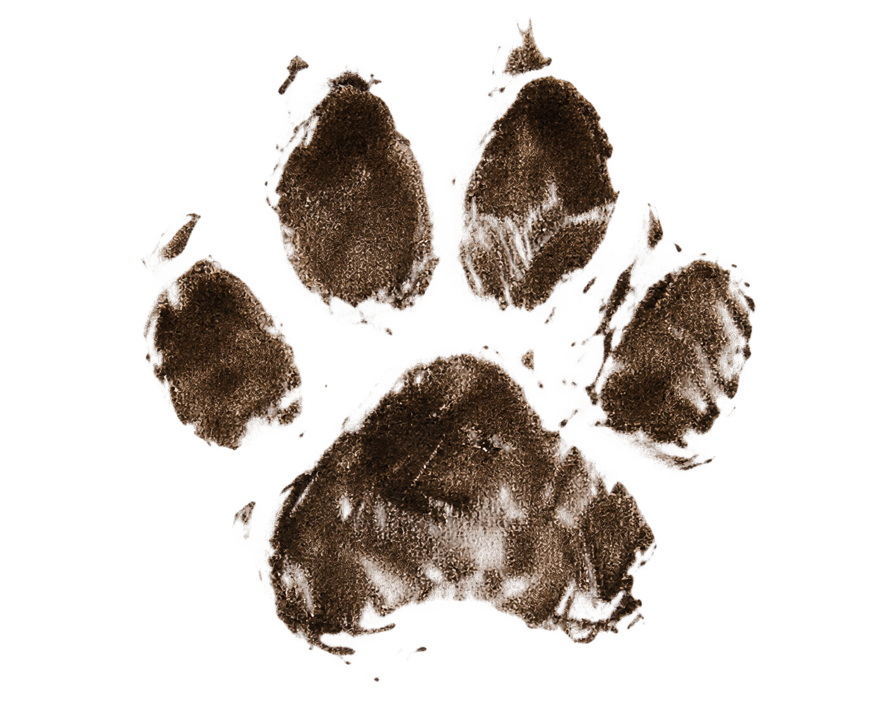

About Us
K-Tai (puppy dogs in Cantonese) is a not-for-profit organization established to help raise the awareness and status of dogs and cats around the world. We have been in existence since 1999, starting in a turn-of-the-century single-level doghouse in Abbotsford, BC. We have since moved to a multi-office unit in Edmonton, Alberta, but have not lost sight of our goals. Our Charter and Mission Statement are to provide such things as:
- Cute and adorable looks to melt your heart
- Soggy laps for any visiting guest
- Unscheduled and spontaneous gaseous emissions
- A convenient scapegoat when accountability for human gaseous emissions is undesirable
- Give you serious attitude
- Provide perpetual head licking for the sake of cleanliness
- Provide hours of entertainment with balls of yarn
Twenty-seven years ago (189 dog years), there were only three founding members: Cantebury, a 3-time AKC champion; Lil Red, offspring of one of the best mousers in the Lower Fraser Valley; and Kathy, well known in the rodeo circuit as a large-animal feed specialist. Since then, K-Tai has grown to billions of members across the globe. We are all part of one large community.
The current Board of Directors will continue this legacy.

CCO (Chief Canine Officer)
K-Tai
Although as a dog or cat you are automatically a member, if you wish to be part of the WWWDC (World Wide Web of Dogs & Cats), we invite you to register with us. You will receive our annual newsletter (7 times a calendar year) and can actively participate in K-Tai operations. To register, just provide your name and click the “Click here to Register” button below.
As we are a not-for-profit organization, we would appreciate a small donation when you register. We gladly accept kibble, Scooby Snacks or cans of tuna. The Feline Department is greatly appreciative of any bright, shiny object.